Original Punjabi music with a cinematic vision.
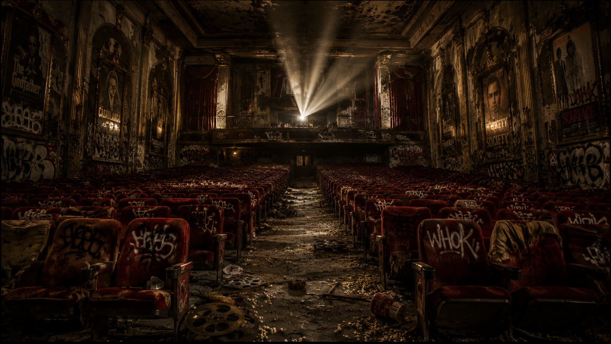
The Anonymous Voice of a Generation
The Voice You Know.
The Face You'll Never Own.
Anaad is more than a music artist—he is an idea. A storyteller without identity. A creator who lets music speak louder than fame.
Singer · Songwriter · Composer · Lyricist · Performer · Producer · Creative Director
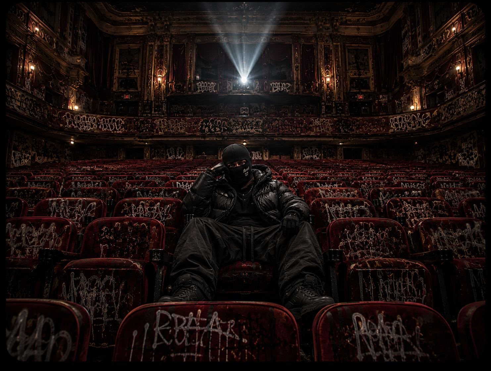
01 — Origin
Anaad is an anonymous Punjabi music artist dedicated to creating timeless music that transcends identity.
Rather than building a celebrity image, Anaad builds worlds through sound. Every release blends cinematic storytelling, emotional songwriting, orchestral textures, modern production, and authentic Punjabi culture into unforgettable musical experiences.
The mask isn't about hiding.
It's about removing distraction.
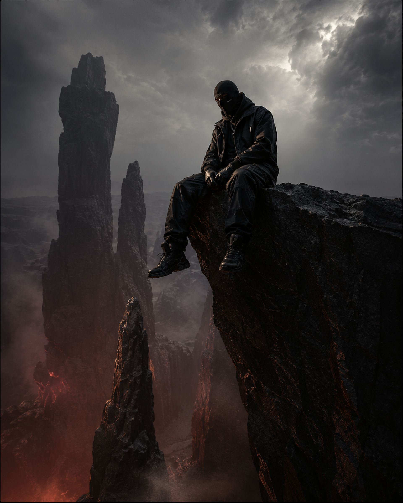
02 — Philosophy
In an age obsessed with personalities, Anaad chooses mystery. The focus remains where it belongs.
Every project is created to be experienced, not consumed.
03 — The Craft
Original Punjabi music with a cinematic vision.
Emotional vocal performances inspired by real stories and timeless melodies.
Writing lyrics that combine poetry, storytelling, and modern culture.
Authentic Punjabi writing filled with emotion, symbolism, and cinematic imagery.
Original melodies blending orchestral scoring, modern trap, hip-hop, R&B, folk, and cinematic sound design.
Immersive soundscapes with premium production quality and world-class arrangements.
Every song exists inside its own visual universe—concept art, videos, fashion, storytelling.
Live performances designed as cinematic experiences rather than traditional concerts.
04 — Discography
Every release is designed as a complete cinematic chapter.
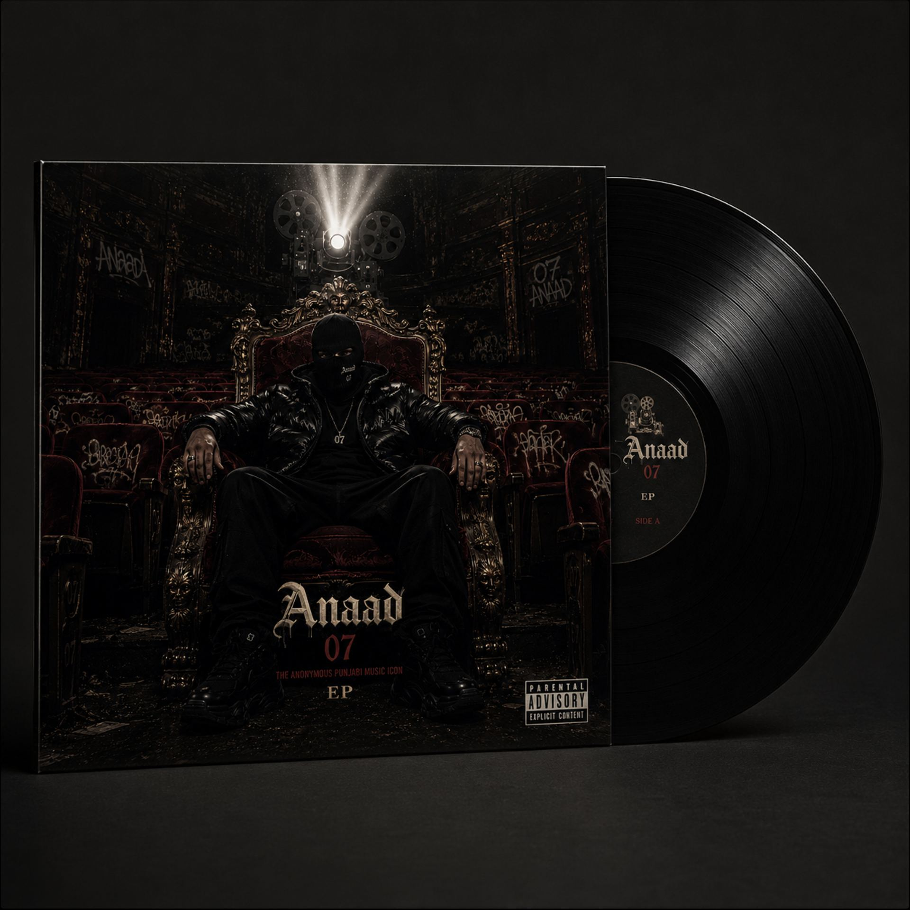
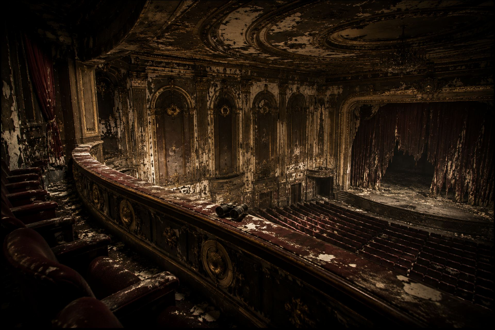
Featured Projects
Original releases crafted with cinematic production.
Short-form musical stories connected by emotion.
Large-scale conceptual projects with immersive storytelling.
Music composed for films, documentaries, and visual experiences.
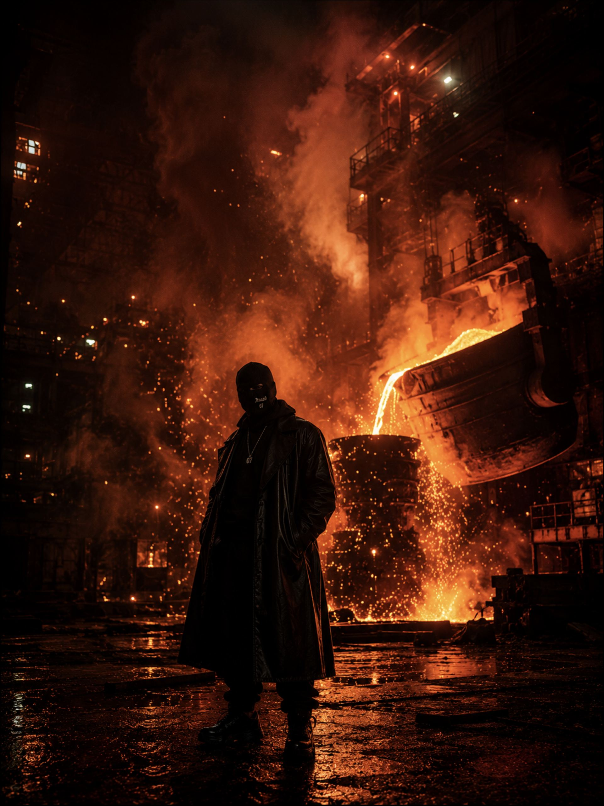
05 — The Sound
06 — Videos
Every frame is crafted with the language of cinema. Luxury production. Dark aesthetics. Powerful symbolism. Movie-quality storytelling. High-fashion visuals. Every music video is a short film.
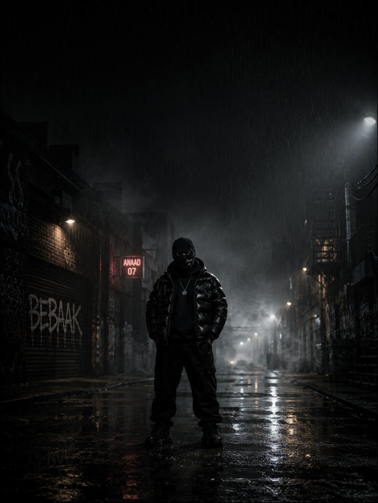
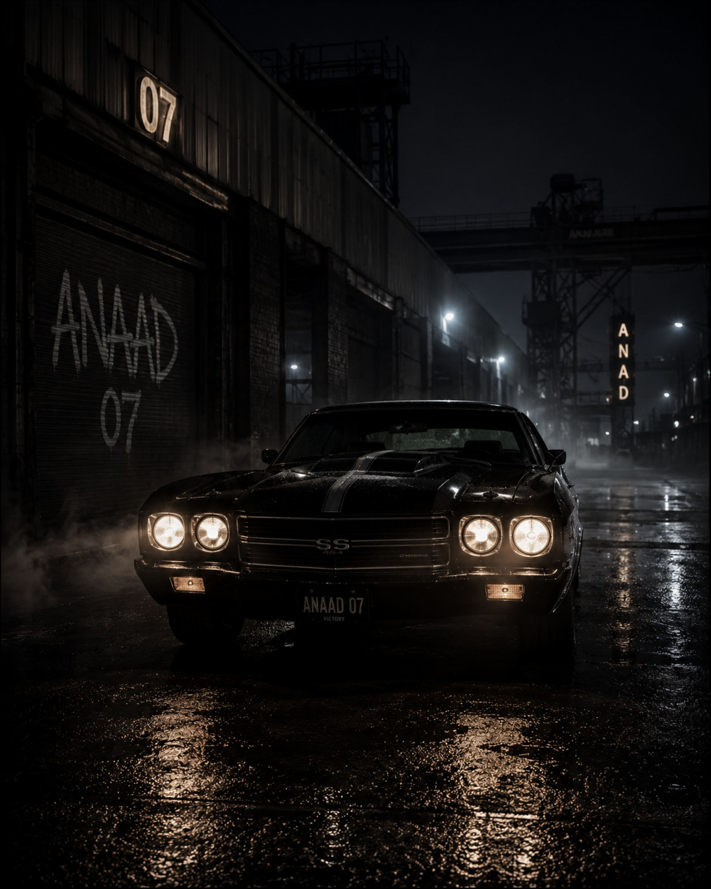
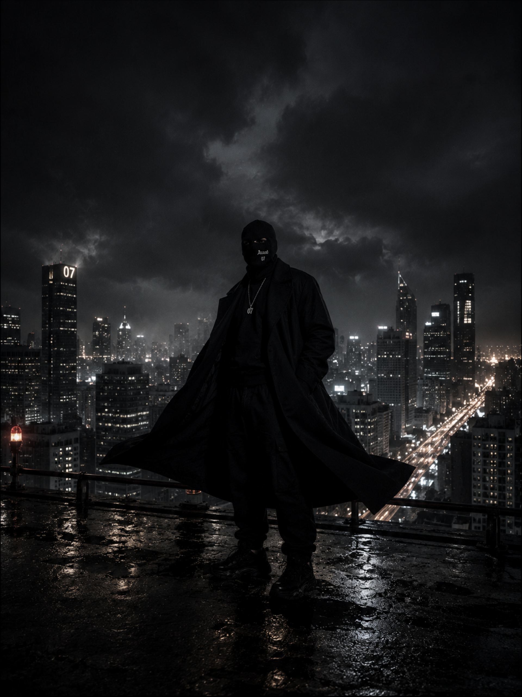
07 — Visual Identity
Every project follows a carefully designed visual language inspired by fashion editorials, blockbuster cinema, architecture, and modern art.
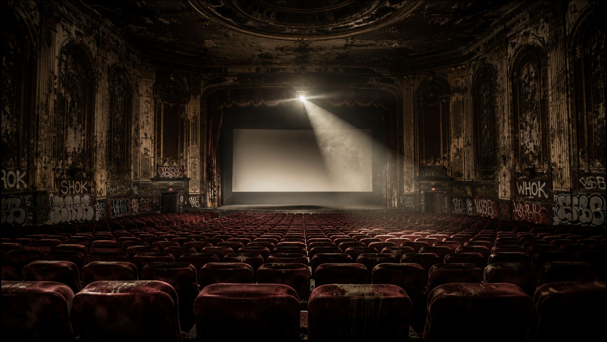
“The face disappears. The music remains.”
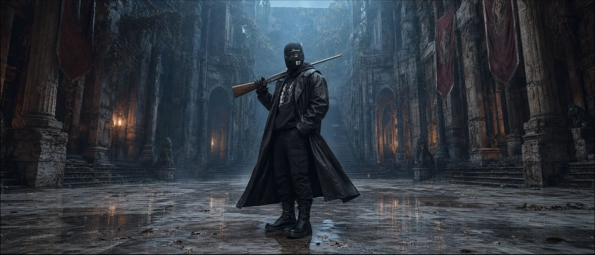
08 — Experience
into one immersive artistic experience.
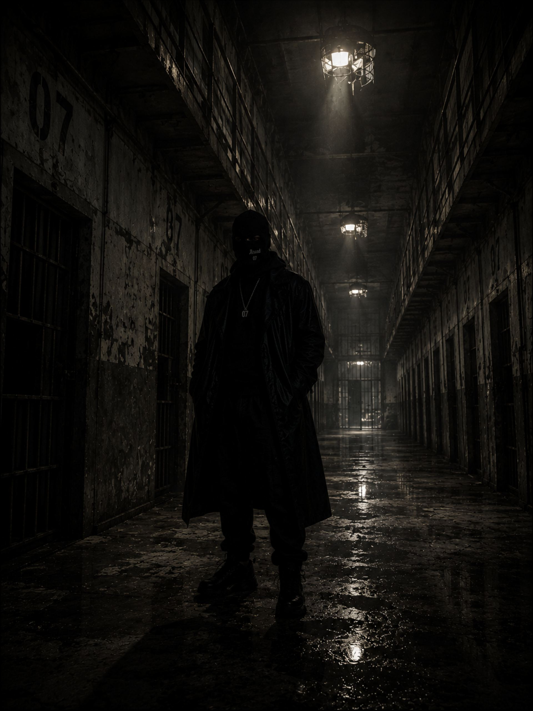
09 — Collaborations
Around the world.
10 — Services
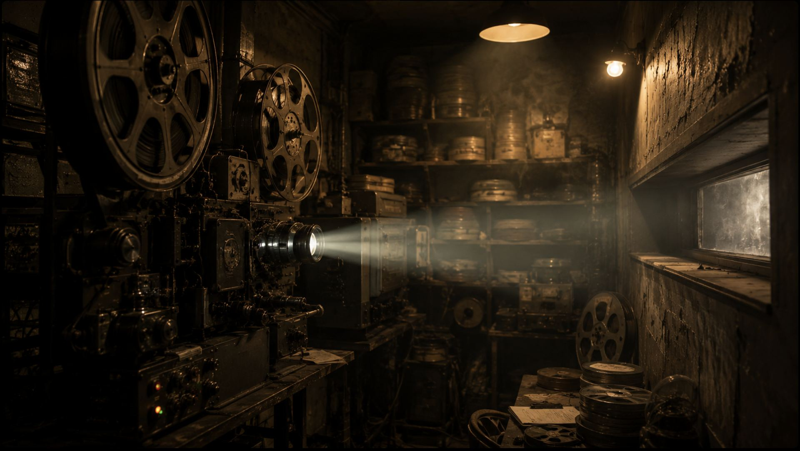
11 — Media
12 — Contact
Whether you're a filmmaker, artist, label, producer, or brand, Anaad collaborates on projects where music and storytelling come together.
Bookings